3 Radiofrequency Coils
Suggestions of all kinds for these lecture notes are welcome — whether it’s fixing small errors, raising bigger questions, or offering new perspectives. Please share comments through GitHub Issues. To make feedback easier to address, please point to the section you have in mind — by section number or a short snippet of text.
3.1 RF Coils Overview
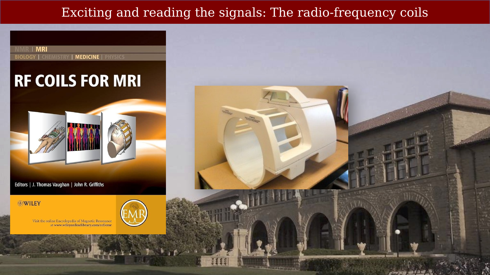
Radiofrequency (RF) coils serve two functions in an MRI system.
- A transmit coil produces the RF magnetic field that tips the nuclear spins.
- A receive coil detects the weak voltage induced by the precessing transverse magnetization.
One coil can transmit and receive at different times. In most human MRI systems, however, the built-in body coil transmits and a separate coil array receives. Coil design strongly affects sensitivity, spatial coverage, and the speed of an acquisition. The coils are an extremely important part of MR instrumentation.
3.2 Surface Coils
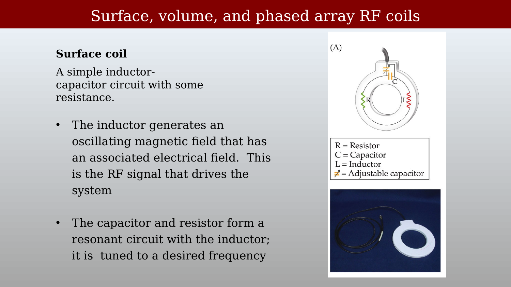
A surface coil is a conducting loop with capacitors that form a resonant circuit. Every real coil also has resistance and other sources of loss. The circuit is tuned to the Larmor frequency; we will return to that frequency when we discuss the free-induction-decay experiment.
Surface coils provide high local sensitivity but limited spatial coverage — they work best for structures close to the coil surface.
The loop behaves as an inductor: alternating current in the loop produces an oscillating \(B_1\) field. Capacitors tune the circuit to resonance and are also used to match the coil to the transmitter or receiver. Resistance represents unavoidable energy loss; it does not provide the impedance match.
The idealized behavior of capacitors and inductors can be compared as follows.
| Feature | Capacitor | Inductor |
|---|---|---|
| Energy storage | Stores energy in an electric field | Stores energy in a magnetic field |
| Response to change | Opposes changes in voltage | Opposes changes in current |
| Ideal impedance | High at DC; decreases with AC frequency | Low at DC; increases with AC frequency |
| Phase relationship | Current leads voltage by 90° | Voltage leads current by 90° |
| Basic construction | Two conductive plates separated by a dielectric | A coil of wire, often wound around a core |
3.3 Volume Coils and the Birdcage Design
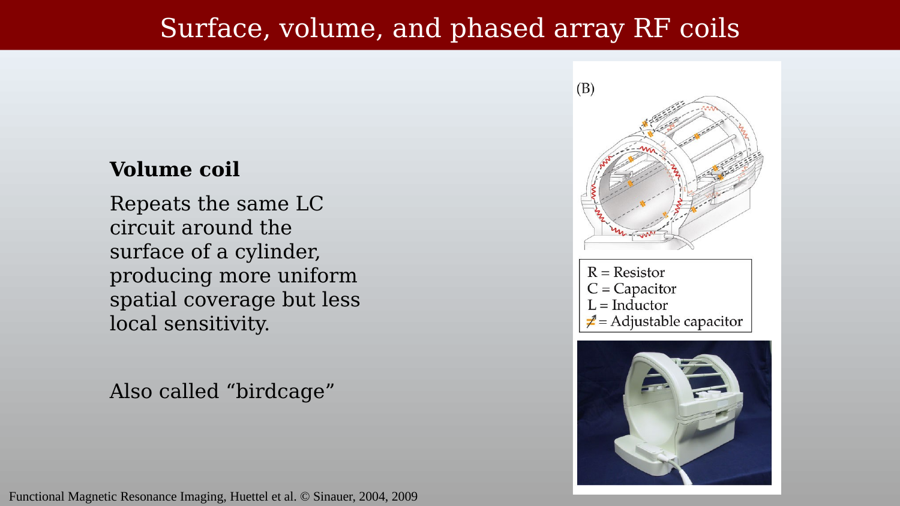
A volume coil distributes conductors and capacitors around a cylinder to generate a relatively uniform \(B_1\) field over a large volume. The birdcage design — multiple conducting rungs connected by end rings — is the standard approach. Its elements form one coupled resonant structure, rather than independent receiver channels whose signals are simply added. The coil in Figure 3.3 excites the whole head at once, with far less variation across the volume than a surface coil.
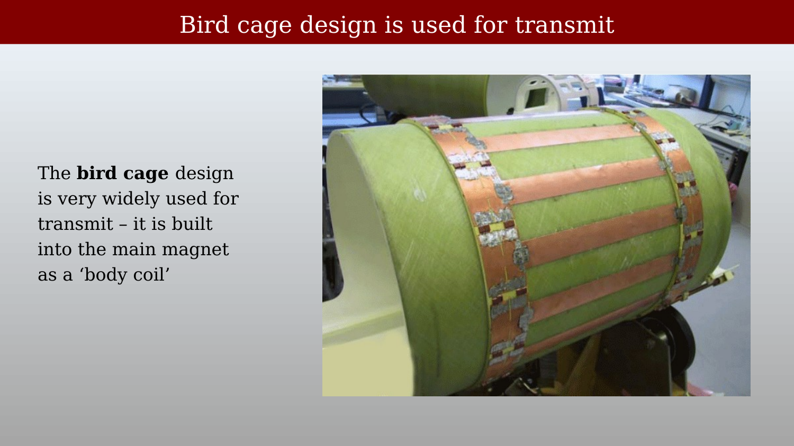
The most important example is the body coil, which is built into the scanner. It is driven in its uniform, circularly polarized mode to provide RF excitation throughout the magnet bore.
At 3 T, and especially at 7 T and above, the RF wavelength in tissue and coupling between the coil and patient become important. These effects can make the transmit field non-uniform and increase SAR, motivating more complex, multi-transmit driving schemes.
3.4 Phased-Array Coils
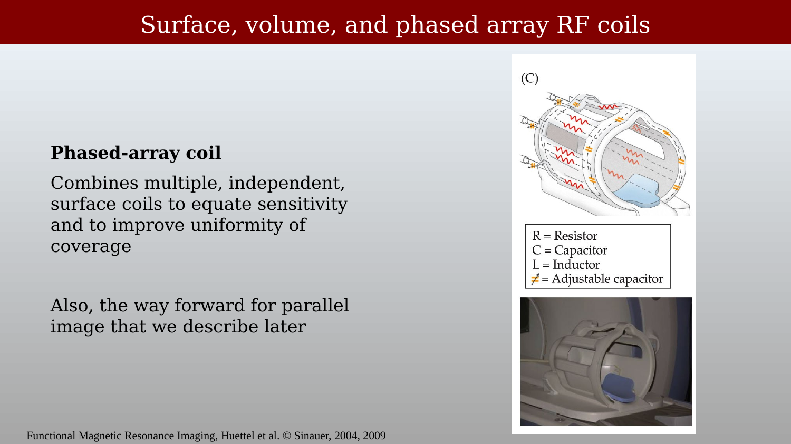
A phased-array coil combines multiple small, independent surface-coil elements — each with its own receiver channel — arranged to cover a larger region. Unlike a volume coil, each element detects signal from its local neighborhood with high sensitivity. The elements are designed to be decoupled so that they do not substantially interfere with one another.
The signals are measured separately and combined computationally to produce an image. This arrangement provides broad coverage while retaining good local signal-to-noise ratio (SNR).
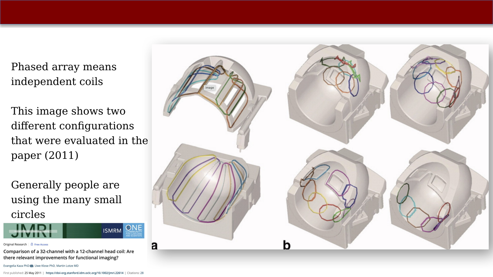
Phased-array coils enable parallel imaging (e.g., SENSE and GRAPPA), which uses the different spatial sensitivity profiles of the elements as additional encoding information. This permits faster acquisitions; we will describe the idea later. More channels can improve SNR and parallel-imaging performance, but only with appropriate element design and greater hardware complexity.
3.5 Head Coils in Practice
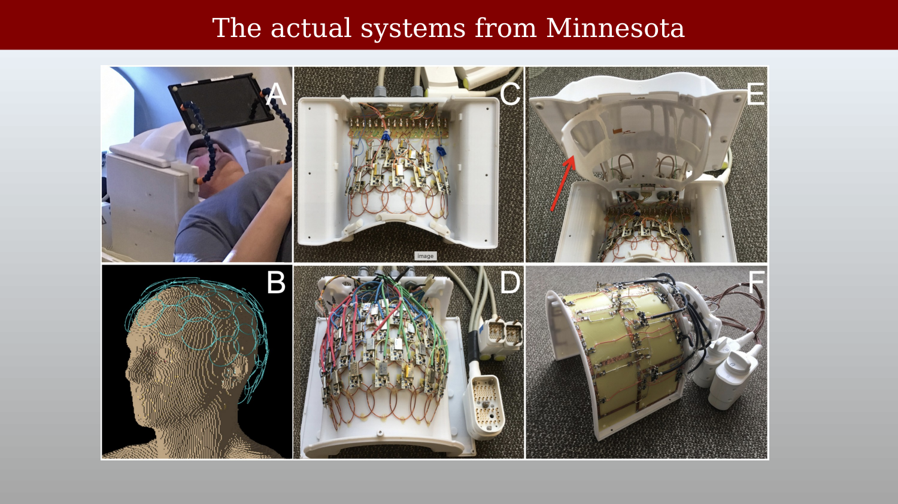
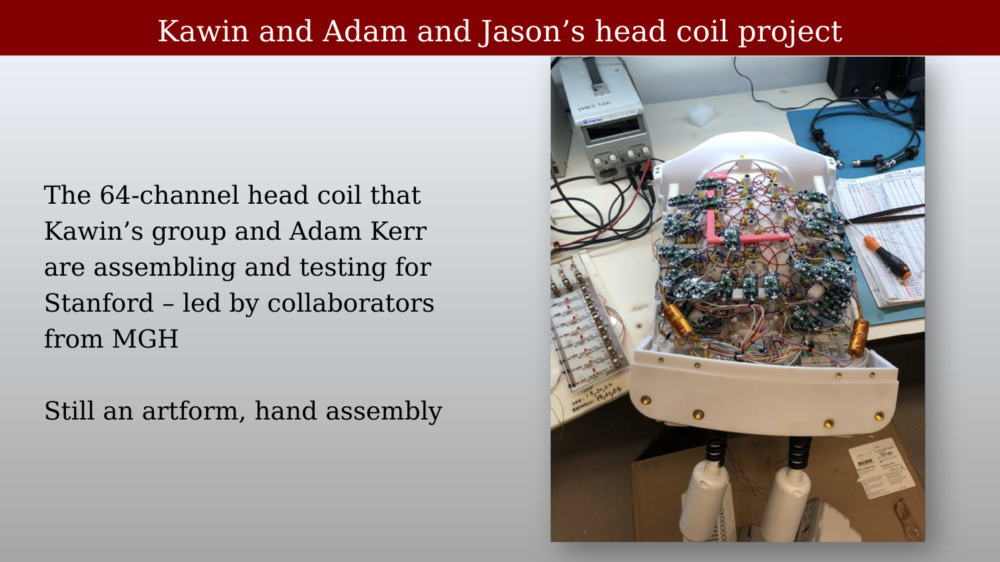
High-channel-count head coils are still largely hand-assembled, requiring careful placement, tuning, and decoupling of each element. The 64-channel coil shown here was assembled for the CNI in collaboration with Massachusetts General Hospital. Coil construction remains something of an art: small changes in one element can alter the tuning or coupling of its neighbors.
3.6 Coil Design and Simulation
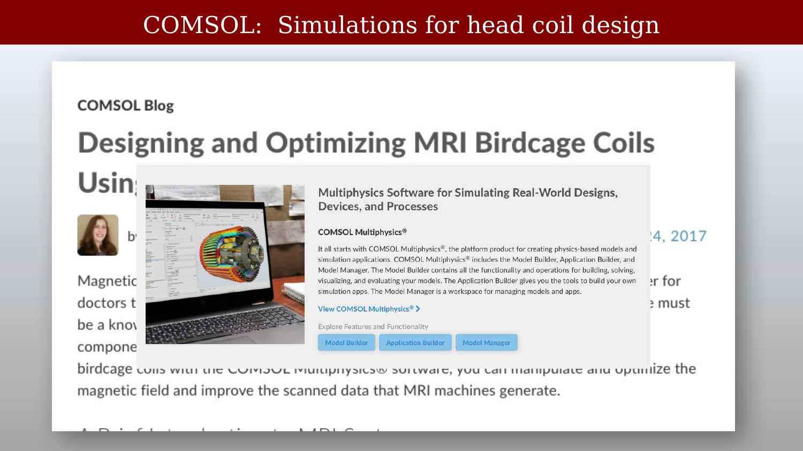
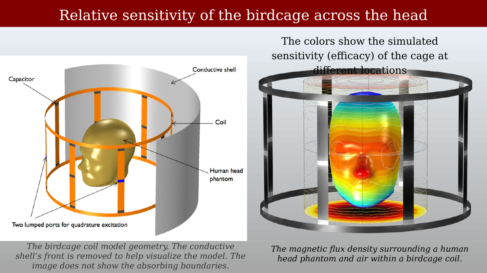
Electromagnetic simulation tools such as COMSOL, CST Studio Suite, and Sim4Life model the transmit and receive RF fields inside the patient, as well as the electric field. They are used to estimate the specific absorption rate (SAR), the RF power absorbed per unit mass of tissue. These simulations are essential for safety evaluation, particularly at high field strengths where transmit-field inhomogeneity and local SAR become more significant.
3.7 Commercial Coils
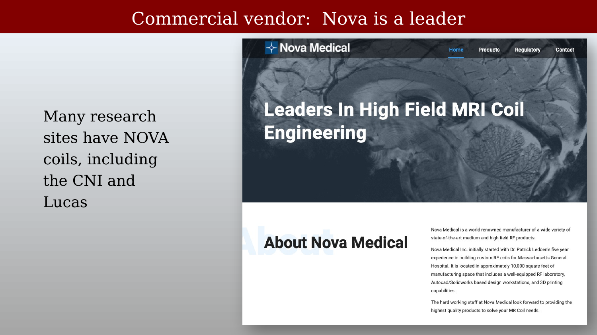
Many research sites use coils from specialized manufacturers rather than from the scanner vendor. Nova Medical is a widely used supplier of high-channel-count head coils for Siemens, GE, and Philips scanners. Other specialized manufacturers include RAPID Biomedical, ScanMed, and PulseTeq.
3.8 Image Quality Across Coil Types
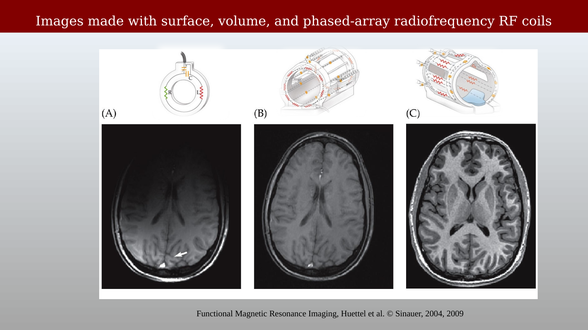
Surface coils provide high SNR near the coil, but their sensitivity falls rapidly with distance. Volume coils provide more uniform coverage across the whole brain, usually with lower receive sensitivity. Phased-array coils combine the local sensitivity of many elements to provide broad coverage and high SNR. Their raw sensitivity is still spatially non-uniform, so image reconstruction often includes a coil-combination or intensity-correction step. This balance makes phased arrays the standard receive coils for modern neuroimaging.